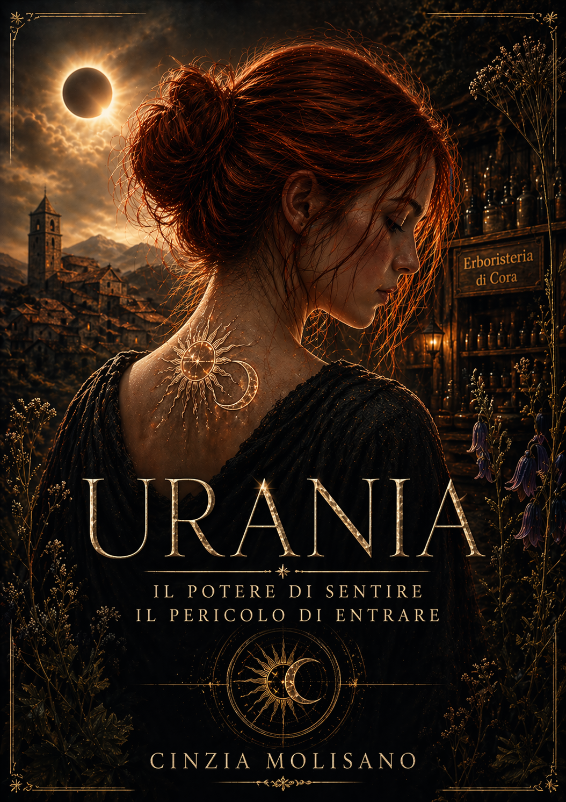

Progetto principale
Urania
È il progetto narrativo a cui ho dedicato più tempo: una storia costruita intorno a identità, legami,
scoperte e a un mondo che si rivela poco alla volta insieme alla sua protagonista.
La pagina dedicata raccoglierà la presentazione del romanzo, i personaggi, le atmosfere,
alcuni estratti e il percorso che ha portato la storia dalla prima idea alla forma attuale.
Romanzo
Personaggi
Mistero
Legami
Identità
Entra nel mondo di Urania →
Graphic novel · autobiografia ironica
Bob Notes
Archivio riservato. Più o meno.
Se Urania nasce dal mistero, Bob Notes nasce da una domanda molto più pericolosa:
cosa succede se gli episodi più assurdi della mia vita vengono affidati a un cane
convinto di essere un investigatore?
Bob osserva, annusa, collega indizi e apre fascicoli su tutto:
infanzia, famiglia, università, relazioni, merluzzi sospetti e incidenti culinari.
Il risultato è una graphic novel autobiografica in cui la realtà viene trattata
con la serietà che merita. Cioè pochissima.
FILE #001
L'origine segreta di Cinzia
FILE #002
L'arma arancione
FILE #003
Il merluzzo mutante
Entra nell'archivio di Bob →